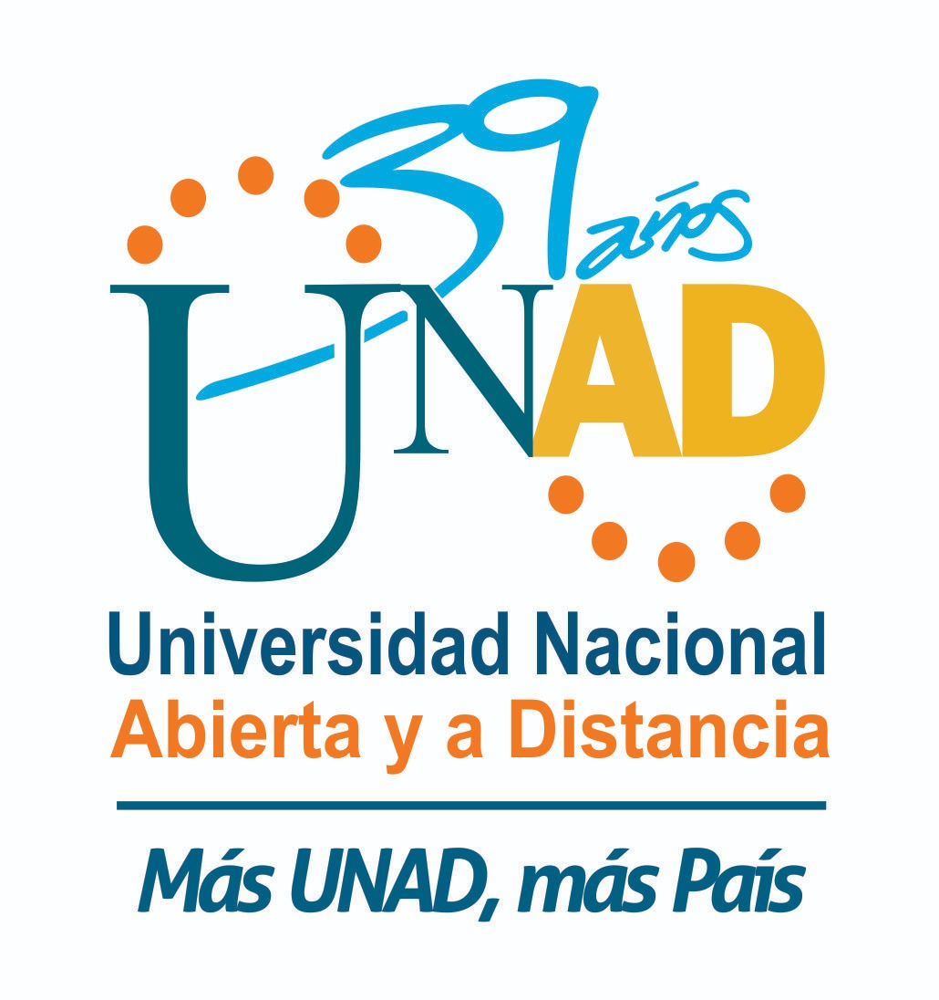

La Universidad Nacional Abierta y a Distancia (UNAD) tiene como misión contribuir a la educación para todos a través de la modalidad abierta, a distancia y en ambientes virtuales de aprendizaje, mediante la acción pedagógica, la proyección social, el desarrollo regional y la proyección comunitaria, la inclusión, la investigación, la internacionalización y las innovaciones metodológicas y didácticas, con la utilización de las tecnologías de la información y las comunicaciones para fomentar y acompañar el aprendizaje autónomo, generador de cultura y espíritu emprendedor que, en el marco de la sociedad global y del conocimiento, propicie el desarrollo económico, social y humano sostenible de las comunidades locales, regionales y globales con calidad, eficiencia y equidad social.
Se proyecta como una organización líder en Educación Abierta y a Distancia, reconocida a nivel nacional e internacional por la calidad innovadora y pertinencia de sus ofertas y servicios educativos y por su compromiso y aporte de su comunidad académica al desarrollo humano sostenible, de las comunidades locales y globales.
Gestionar la acción del conocimiento mediante la implementación de los centros de pensamiento regional con la participación autónoma, libre, crítica y creativa de las comunidades en los nodos y redes regionales del OIR, en el marco del Liderazgo Transformador para la renovación permanente de sus procesos de autogestión formativa, transformación productiva y cambio sociocultural.
1. Implementar estrategias de reconocimiento y análisis del territorio en materia económica, social, cultural, ambiental y tecnológica que contribuyan en la implementación de planes, programas y proyectos de impacto positivo en las realidades y la promoción del desarrollo sostenible en las comunidades.
2. Documentar toda la acción para la gestión del conocimiento desarrollada mediante la puesta en marcha de los componentes estructurales del OIR mediante la realización y divulgación continua de documentos técnicos que den cuenta de los avances alcanzados en cada uno de los Nodos y Redes Regionales del OIR.
3. Promover el desarrollo sostenible de las regiones mediante el análisis y difusión de los estudios de territorio como referentes diferenciales para la toma de decisiones de las instituciones y de las comunidades.
4. Dinamizar espacios de interacción continua con las comunidades y las instituciones que las representan para la socialización y fortalecimiento permanente de los estudios de territorio en cada una de las regiones orientados en la creación participativa de planes, programas, proyectos y servicios para las comunidades.